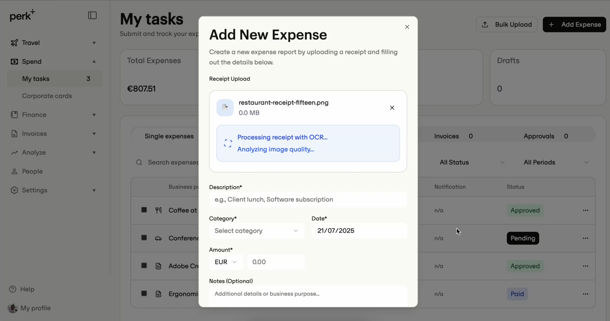
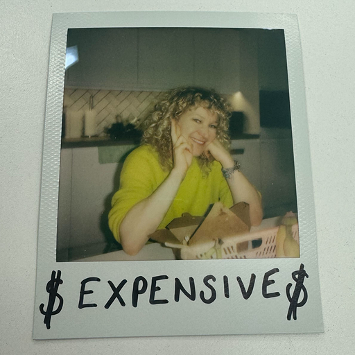

Interactive expense prototype

By Annalisa Cividati
Life of an expenses is an interactive prototype that demos how a user can submit an expenses, check their data accuracy and send it to Finance for a final preview before being exported to the ERP of choice.
Learnings
- Give small and concise prompts, if you overload the machine with too much noise, it returns too many errors
- Get OCR API connected: that would have been a plus to make the data capture feature more sleek. I need to check how to connect an OCR API to make it real. ATM, the limitations of the tool doesn't capture accurately the data from the receipts :cryingyes:
- Overall, I think this could be a great working prototype for users to test the end to end flow from submission to reconciliation and export to ERP